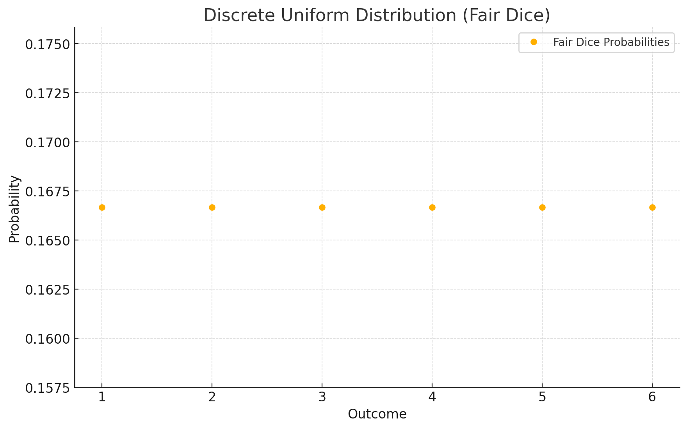
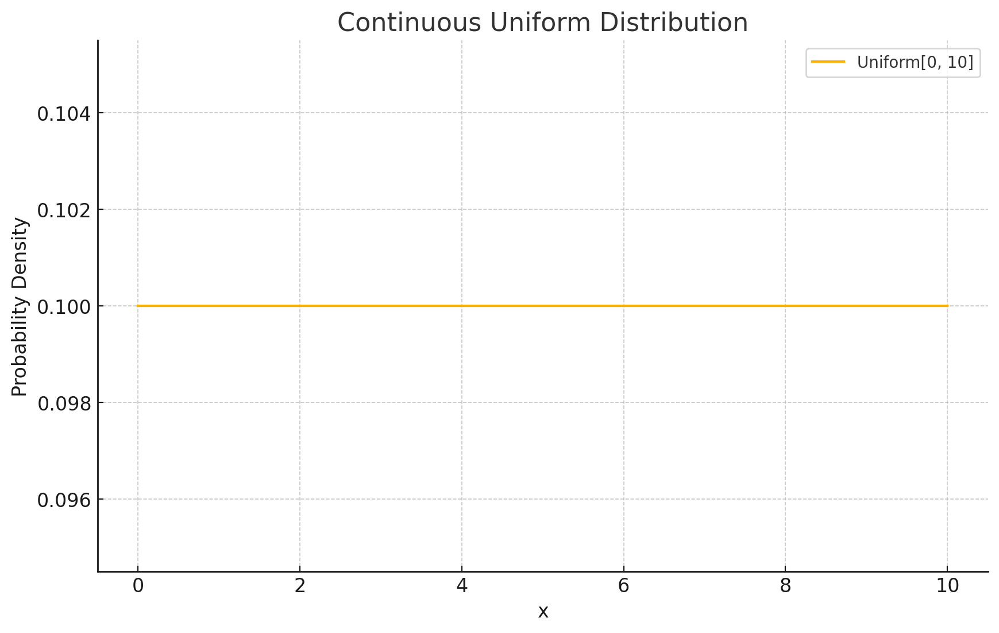
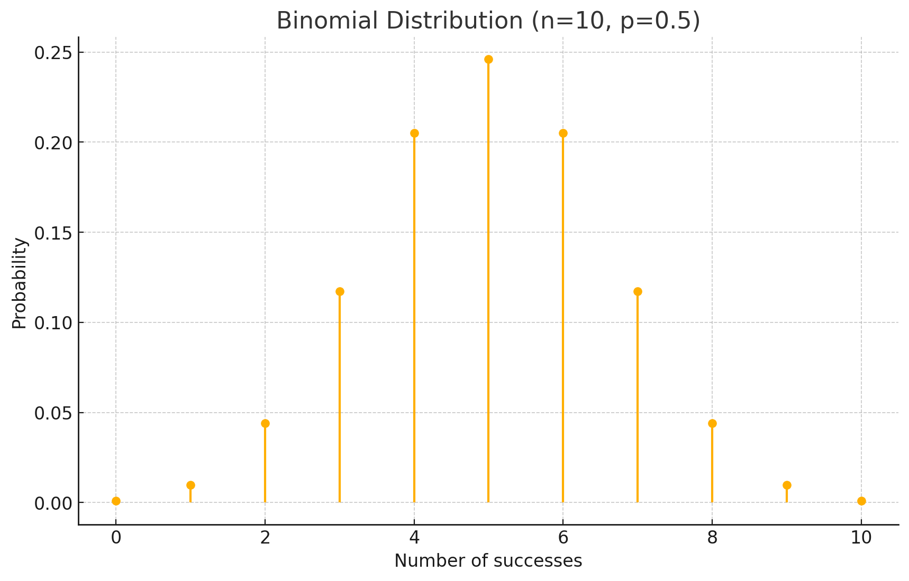
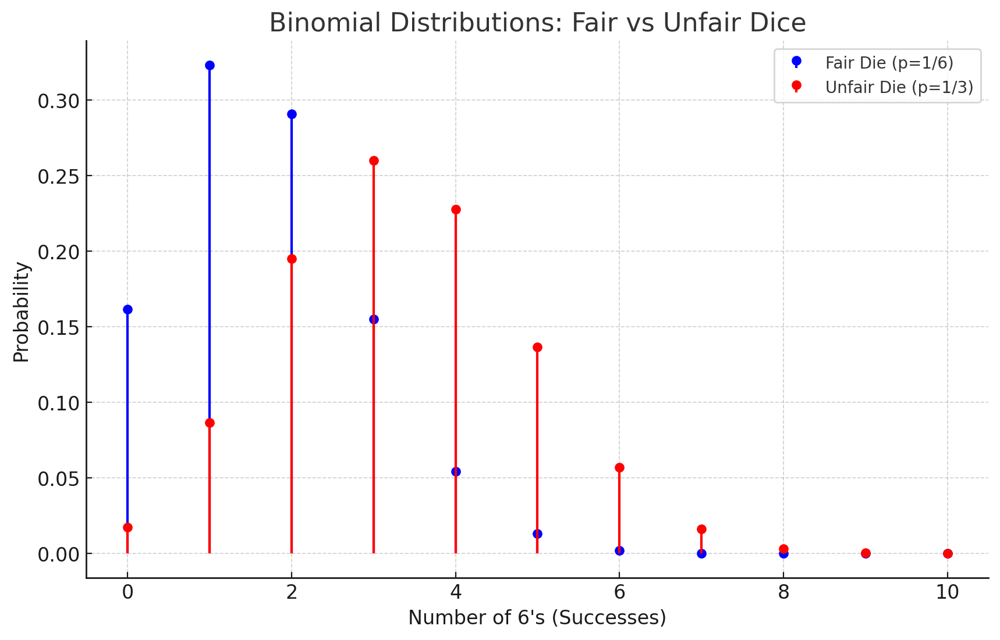
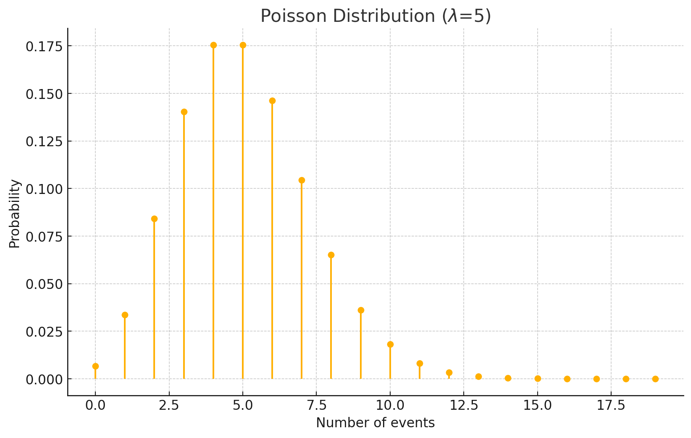
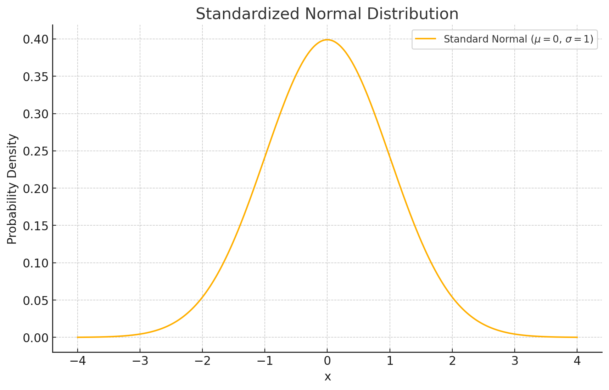
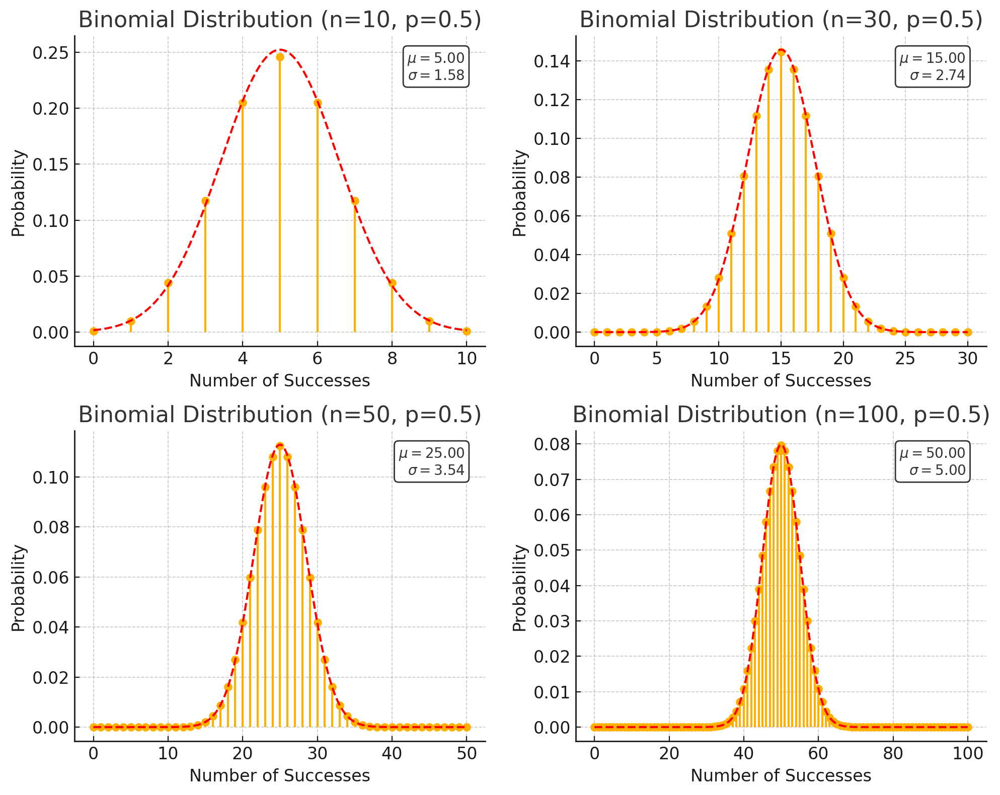
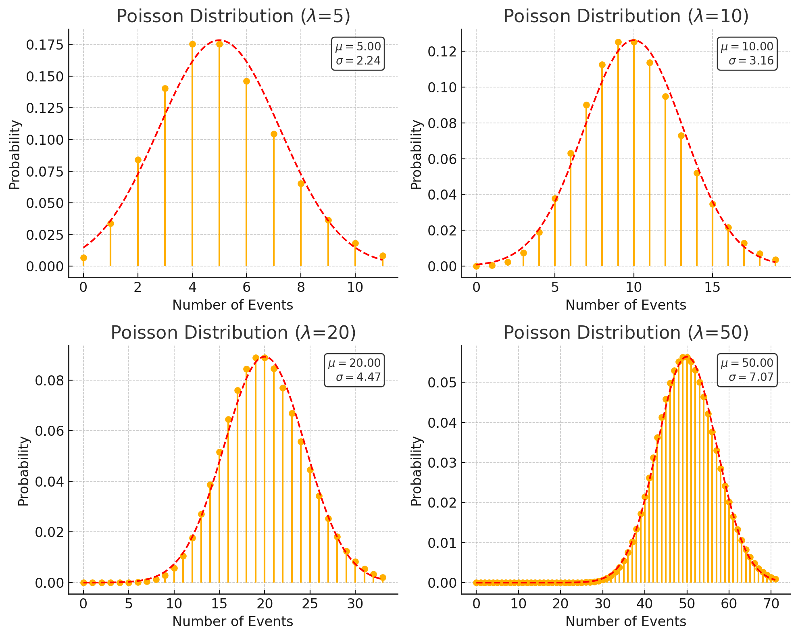
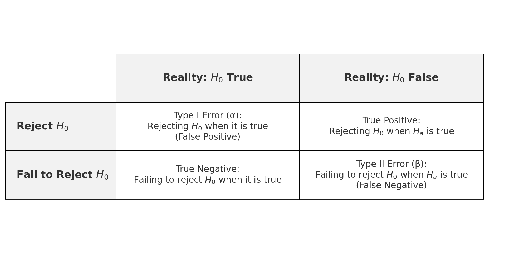
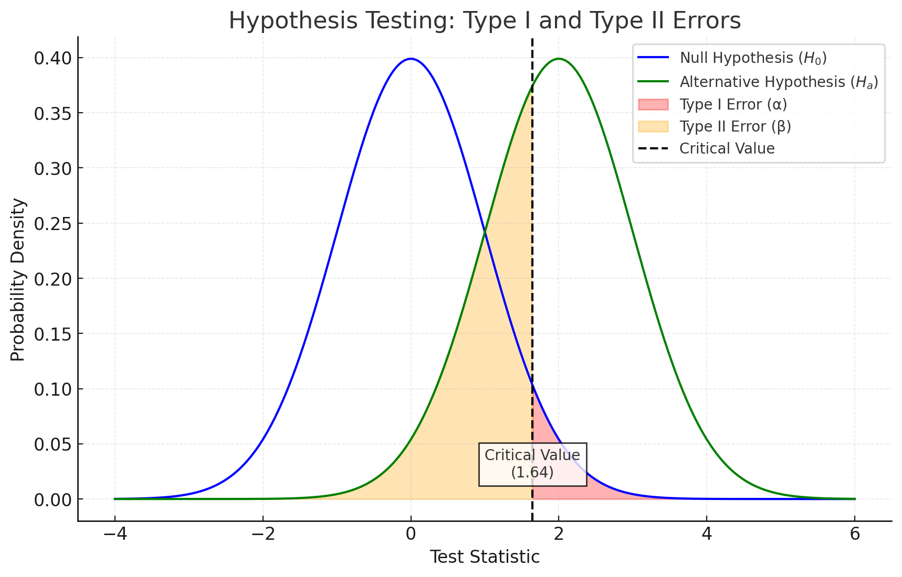

Statistics and Probability#
Measures used in Statistics#
1. Mean (Arithmetic Average)#
Represents the average of all data points.
Sensitive to outliers.
2. Median#
The middle value of the dataset when sorted in ascending order.
If the number of data points is even, the median is the average of the two middle values.
Robust to outliers.
3. Mode#
The most frequently occurring value in the dataset.
A dataset can have one mode (unimodal), more than one mode (multimodal), or no mode.
Expectation (Expected Value)#
Definition#
For a discrete random variable \( X \):
\[E[X] = \sum_{x} x \cdot P(X = x)\]For a continuous random variable:
\[E[X] = \int_{-\infty}^\infty x \cdot f(x) \, \mathrm{d}x\]Represents the long-run average value of \( X \) over many trials.
Linear Property#
If \( a, b \) are constants and \( X, Y \) are random variables:
Variance and Standard Deviation#
Variance#
Measures the spread of the data around the mean.
For a dataset:
\[\text{Var}(X) = \frac{\sum_{i=1}^n (x_i - \bar{x})^2}{n} \quad \text{(population variance)}\]\[\text{Var}(X) = \frac{\sum_{i=1}^n (x_i - \bar{x})^2}{n-1} \quad \text{(sample variance)}\]
Standard Deviation#
The square root of the variance.
Provides a measure of the typical deviation of data points from the mean in the same units as the data.
Applications#
Mean: Used in averaging test scores, economic indicators, etc.
Median: Useful when data is skewed, e.g., income distribution.
Mode: Helps identify common trends, e.g., most popular product size.
Variance and Standard Deviation: Key in finance (risk analysis), quality control, and research to measure variability.
Uniform Distribution#
Discrete Uniform Distribution#
A discrete uniform distribution is a type of probability distribution where a finite set of outcomes are equally likely. For example, when rolling a fair die, each of the six outcomes is equally probable.
Example: Rolling a Fair Six-Sided Die#
Let \( X \) be the random variable representing the outcome of rolling a fair six-sided die. The outcomes are \( x = 1, 2, 3, 4, 5, 6 \), and each outcome is equally likely.

A discrete uniform distribution represents equally likely outcomes. For a fair six-sided die, each face has an equal probability of \( \frac{1}{6} \). This is a basic example of a discrete uniform probability distribution.
Probability Mass Function (PMF):
\[P(X = x) = \frac{1}{6}, \quad x = 1, 2, 3, 4, 5, 6\]This means each of the six outcomes has a probability of \( \frac{1}{6} \).
Expected Value (Mean): The expected value (or mean) of a discrete uniform distribution on \( n \) outcomes is:
\[E[X] = \frac{n + 1}{2}\]For a die with \( n = 6 \):
\[E[X] = \frac{6 + 1}{2} = 3.5\]This indicates that, on average, the outcome of rolling the die is 3.5.
Variance and Standard Deviation: The variance of a discrete uniform distribution on integers \( 1 \) to \( n \) is:
\[\mathrm{Var}(X) = \frac{(n^2 - 1)}{12}\]For a die, where \( n = 6 \):
\[\mathrm{Var}(X) = \frac{6^2 - 1}{12} = \frac{35}{12} \approx 2.92\]The standard deviation is the square root of the variance:
\[\sigma = \sqrt{\mathrm{Var}(X)} \approx \sqrt{2.92} \approx 1.71\]
Continuous Uniform Distribution#
A continuous uniform distribution is a probability distribution where all values in a continuous interval are equally likely. It is characterized by two parameters: the lower bound \( a \) and the upper bound \( b \). The probability of any outcome within this range is constant.
Example: A Random Variable Between 0 and 1#
Let \( X \) be a random variable uniformly distributed between 0 and 1. The probability density function (PDF) for this distribution is defined over the interval \( [0, 1] \).

A continuous uniform distribution models a scenario where any value within a range is equally likely. The probability density function is constant over the interval \([0, L]\), and zero elsewhere. In this plot, \( L = 10 \).
Probability Density Function (PDF): The PDF for a continuous uniform distribution on \( [a, b] \) is:
\[f_X(x) = \frac{1}{b - a}, \quad a \leq x \leq b\]For \( a = 0 \) and \( b = 1 \), the PDF becomes:
\[f_X(x) = 1, \quad 0 \leq x \leq 1\]This indicates that the probability is uniformly distributed across the interval from 0 to 1.
Expected Value (Mean): The expected value of a continuous uniform distribution on the interval \( [a, b] \) is:
\[E[X] = \frac{a + b}{2}\]For \( a = 0 \) and \( b = 1 \), the expected value is:
\[E[X] = \frac{0 + 1}{2} = 0.5\]This indicates that the mean of the distribution is at the center of the interval.
Variance and Standard Deviation: The variance of a continuous uniform distribution on \( [a, b] \) is:
\[\mathrm{Var}(X) = \frac{(b - a)^2}{12}\]For \( a = 0 \) and \( b = 1 \), the variance is:
\[\mathrm{Var}(X) = \frac{(1 - 0)^2}{12} = \frac{1}{12} \approx 0.0833\]The standard deviation is:
\[\sigma = \sqrt{\frac{1}{12}} \approx 0.2887\]
Key Differences Between Discrete and Continuous Uniform Distributions#
Outcomes:
In a discrete uniform distribution, outcomes are distinct and countable (e.g., 1, 2, 3, 4, 5, 6 for a die).
In a continuous uniform distribution, outcomes are not countable and form a continuous range (e.g., any value between 0 and 1).
Probability Function:
The PMF for a discrete uniform distribution assigns a fixed probability to each individual outcome.
The PDF for a continuous uniform distribution describes the density of probability across the range, but the probability of any single point is zero (because a continuous distribution has infinitely many possible outcomes).
Expected Value:
For the discrete case, the expected value is calculated as the average of the discrete outcomes.
For the continuous case, the expected value is the midpoint of the interval \( [a, b] \).
General Formulae for Uniform Distributions#
Discrete Uniform Distribution:
PMF: \( P(X = x) = \frac{1}{n} \), where \( n \) is the number of outcomes.
Expected Value: \( E[X] = \frac{n + 1}{2} \).
Variance: \( \mathrm{Var}(X) = \frac{n^2 - 1}{12} \).
Continuous Uniform Distribution:
PDF: \( f_X(x) = \frac{1}{b - a} \), where \( a \leq x \leq b \).
Expected Value: \( E[X] = \frac{a + b}{2} \).
Variance: \( \mathrm{Var}(X) = \frac{(b - a)^2}{12} \).
Applications of Uniform Distributions#
Discrete Uniform: Useful in modeling situations where every outcome is equally likely, such as rolling a fair die, drawing a card from a well-shuffled deck, or selecting a random number from a set.
Continuous Uniform: Used in modeling situations where every outcome in a continuous interval is equally likely, such as the selection of a random time between 0 and 1 hour or generating random numbers in a specified range for simulations.
Binomial Distribution#
The binomial distribution describes the number of successes in a fixed number of independent trials of a binary (yes/no, success/failure) experiment. It is often used to model situations where there are two possible outcomes for each trial, such as flipping a coin.
Binomial Distribution Basics#
The binomial distribution is characterized by:
The number of trials \( n \)
The probability of success on a single trial \( p \)
The number of successes \( k \), which is the value of the random variable
The probability mass function (PMF) for the binomial distribution is given by:
where:
\( \binom{n}{k} = \frac{n!}{k!(n-k)!} \) is the binomial coefficient
\( p \) is the probability of success on a single trial
\( n \) is the number of trials
\( k \) is the number of successes
Example: Flipping a Fair Coin#
Consider flipping a fair coin \( n = 10 \) times, and we want to calculate the probability of getting exactly \( k \) heads (successes) in those 10 flips. In this case, the probability of getting heads (success) on any single flip is \( p = 0.5 \).
Probability of Getting Exactly 5 Heads:
\[P(X = 5) = \binom{10}{5} (0.5)^5 (0.5)^{10-5} = \binom{10}{5} (0.5)^{10}\]First, calculate the binomial coefficient:
\[\binom{10}{5} = \frac{10!}{5!(10-5)!} = 252\]Then, calculate the probability:
\[P(X = 5) = 252 \times (0.5)^{10} = 252 \times \frac{1}{1024} \approx 0.2461\]The probability of getting exactly 5 heads is approximately 0.2461.
Example: Rolling a Fair Die#
Consider rolling a fair die \( n = 10 \) times. We want to calculate the probability of rolling a 6 exactly \( k = 2 \) times. In this case, the probability of rolling a 6 (success) on any single roll is \( p = \frac{1}{6} \).

The binomial distribution models the probability of a specific number of successes in \( n \) independent trials, each with success probability \( p \). This example shows \( n = 10 \) trials with \( p = 0.5 \).
Probability of Rolling a 6 Exactly Twice:
\[P(X = 2) = \binom{10}{2} \left(\frac{1}{6}\right)^2 \left(\frac{5}{6}\right)^{8}\]First, calculate the binomial coefficient:
\[\binom{10}{2} = \frac{10!}{2!(10-2)!} = 45\]Then, calculate the probability:
\[P(X = 2) = 45 \times \left(\frac{1}{6}\right)^2 \times \left(\frac{5}{6}\right)^8 \approx 0.2907\]The probability of rolling a 6 exactly 2 times is approximately 0.2907.
Example: Flipping an Unfair Coin#
Now, consider flipping an unfair coin \( n = 10 \) times, where the probability of getting heads (success) is \( p = 0.7 \) and the probability of getting tails (failure) is \( 1 - p = 0.3 \).
Probability of Getting Exactly 7 Heads:
\[P(X = 7) = \binom{10}{7} (0.7)^7 (0.3)^3\]First, calculate the binomial coefficient:
\[\binom{10}{7} = \frac{10!}{7!(10-7)!} = 120\]Then, calculate the probability:
\[P(X = 7) = 120 \times (0.7)^7 \times (0.3)^3 \approx 0.267\]The probability of getting exactly 7 heads is approximately 0.267.

This plot compares the binomial distributions for a fair die (\( p = \frac{1}{6} \)) and an unfair die (\( p = \frac{1}{3} \)) over \( n = 10 \) trials. The x-axis represents the number of times a 6 is rolled (successes), and the y-axis shows the corresponding probabilities. The fair die produces a flatter distribution due to the lower probability of rolling a 6, while the unfair die results in a more concentrated distribution around higher values of successes.
Key Properties of the Binomial Distribution#
Independence: The trials are independent, meaning the outcome of one trial does not affect the others.
Fixed Number of Trials: The number of trials \( n \) is fixed in advance.
Binary Outcomes: Each trial has two possible outcomes: success (e.g., heads) or failure (e.g., tails).
Constant Probability: The probability of success \( p \) remains constant across all trials.
Applications of the Binomial Distribution#
Coin Flips: Modeling the number of heads in a series of coin flips.
Rolling Dice: Calculating probabilities of specific outcomes in repeated rolls.
Quality Control: Determining the number of defective items in a batch.
Survey Sampling: Analyzing the number of respondents who respond in a certain way in a survey.
Poisson Distribution#
The Poisson distribution is a discrete probability distribution that expresses the probability of a given number of events occurring in a fixed interval of time or space. These events must occur with a known constant mean rate and independently of the time since the last event.
It is often used to model the number of events that happen in a fixed interval (e.g., number of phone calls at a call centre in an hour, number of accidents at an intersection in a day, etc.).
Poisson Distribution Basics#
The Poisson distribution is characterised by a single parameter \( \lambda \), which represents the average number of events in the given interval. The probability mass function (PMF) for the Poisson distribution is:
Where:
\( k \) is the number of events (successes),
\( \lambda \) is the average number of events in the interval (the rate),
\( e \) is Euler’s number (approximately 2.71828),
\( k! \) is the factorial of \( k \).
Key Properties of the Poisson Distribution#
Mean: The mean of a Poisson distribution is equal to its rate parameter \( \lambda \).
\[E[X] = \lambda\]Variance: The variance of a Poisson distribution is also equal to its rate parameter \( \lambda \).
\[\text{Var}(X) = \lambda\]Independence: Events are independent of one another, meaning the occurrence of one event does not affect the probability of another event happening.
Constant Rate: Events occur at a constant average rate \( \lambda \) over the interval, and the time between events is exponentially distributed.
Example: Number of Customer Arrivals at a Store#
Let’s say the average number of customers arriving at a store per hour is 5. This can be modelled as a Poisson distribution with \( \lambda = 5 \) for a one-hour period.

The Poisson distribution is used to model the number of events occurring in a fixed interval of time or space, given a constant average rate \( \lambda \). This plot demonstrates the probabilities for \( \lambda = 5 \).
Probability of Exactly 3 Customers Arriving in One Hour:#
We want to calculate the probability of exactly 3 customers arriving at the store in one hour.
The Poisson probability mass function is:
First, calculate \( 5^3 \), \( e^{-5} \), and \( 3! \):
Now calculate the probability:
So, the probability that exactly 3 customers will arrive in one hour is approximately 0.1404 (or 14.04%).
Probability of 0 Customers Arriving in One Hour:
We can calculate the probability of 0 customers arriving in one hour:
So, the probability that no customers arrive in one hour is approximately 0.0067 (or 0.67%).
Applications of the Poisson Distribution#
The Poisson distribution is widely used in various fields for modelling count-based data, such as:
Customer service: Modelling the number of customer calls, complaints, or arrivals.
Healthcare: Modelling the number of emergency room visits, patient arrivals, or disease occurrences in a population over a certain period.
Traffic flow: Modelling the number of cars passing through a toll booth or traffic light within a fixed time period.
Queuing theory: Modelling the number of customers arriving at a service point in a given time period.
Normal Distribution#
The normal distribution, also known as the Gaussian distribution, is one of the most widely used probability distributions in statistics. It is used to model a wide range of natural phenomena, such as heights, test scores, and measurement errors. The normal distribution is characterised by its bell-shaped curve, which is symmetric about the mean.
Normal Distribution Basics#
The probability density function (PDF) of the normal distribution is given by the formula:
Where:
\( x \) is the variable,
\( \mu \) is the mean (centre of the distribution),
\( \sigma^2 \) is the variance,
\( \sigma \) is the standard deviation,
\( e \) is Euler’s number (approximately 2.71828),
\( \pi \) is approximately 3.14159.
The normal distribution is fully characterised by its mean \( \mu \) and standard deviation \( \sigma \). The shape of the distribution is symmetric around the mean, with most values clustering near the mean and fewer values farther away.
Key Properties:#
Symmetry: The normal distribution is symmetric around the mean, meaning the left half of the distribution is a mirror image of the right half.
Bell-Shaped Curve: The curve is bell-shaped, meaning it has a peak at the mean and tapers off as \( x \) moves away from the mean.
68-95-99.7 Rule:
Approximately 68% of the data lies within one standard deviation of the mean.
Approximately 95% lies within two standard deviations.
Approximately 99.7% lies within three standard deviations.
Standard Normal Distribution#
A standard normal distribution is a normal distribution with a mean of 0 and a standard deviation of 1. It is denoted as \( Z \) and has the following probability density function:
Where:
\( z \) is the standard score (also known as the z-score), representing how many standard deviations away from the mean a value is.
The z-score is calculated as:
Where:
\( x \) is the value,
\( \mu \) is the mean,
\( \sigma \) is the standard deviation.
By converting any normal distribution to the standard normal distribution using the z-score, we can use z-tables (or standard normal distribution tables) to find probabilities associated with a given value.

The standard normal distribution is a bell-shaped curve symmetric about the mean (\( \mu = 0 \)) with a standard deviation (\( \sigma = 1 \)). It is a fundamental model in statistics, representing data that is normally distributed.
Example: Heights of People#
Suppose the heights of adult women in the United States are normally distributed with a mean height of \( \mu = 64 \) inches and a standard deviation of \( \sigma = 3 \) inches. Let’s calculate the probability that a randomly selected woman is taller than 68 inches.
First, convert the height to a z-score:
Now, using a z-table or standard normal distribution, find the probability associated with \( z = 1.33 \). This corresponds to the probability that a randomly selected woman is shorter than 68 inches. The area to the left of \( z = 1.33 \) is approximately 0.9082, so the probability of being taller than 68 inches is:
Thus, the probability that a randomly selected woman is taller than 68 inches is approximately 9.18%.
Properties of the Normal Distribution#
Mean, Median, and Mode: In a normal distribution, the mean, median, and mode all coincide at the centre of the distribution.
68-95-99.7 Rule: This rule, also known as the empirical rule, states the percentage of data that lies within 1, 2, and 3 standard deviations of the mean, respectively.
Skewness and Kurtosis: The normal distribution has skewness = 0 (it is symmetric), and kurtosis = 3 (it has a moderate peak).
Applications of the Normal Distribution#
Measurement Errors: Many physical measurements (e.g., lengths, weights, times) are modeled as normally distributed because of the Central Limit Theorem.
Central Limit Theorem (CLT): The CLT states that the distribution of the sum (or average) of a large number of independent, identically distributed random variables approaches a normal distribution, regardless of the original distribution. This is why normal distributions often arise in practice, even for non-normal underlying distributions.
Quality Control: In manufacturing, the normal distribution is used to model variations in products or processes and to set control limits for quality testing.
Finance: Stock returns are often assumed to follow a normal distribution for risk assessment and pricing options.
Normal Approximation to the Binomial Distribution#
When the number of trials \( n \) is large and the probability of success \( p \) is not too close to 0 or 1, the binomial distribution can be approximated by a normal distribution. The normal approximation is valid when both \( np \) and \( n(1 - p) \) are greater than 5.
The mean and variance of the approximating normal distribution are:
For large \( n \), this approximation makes it easier to compute binomial probabilities using the normal distribution.
Empirical Rules For Normal Distributions#
\( 68\% \) of data falls within 1 standard deviation (\( \mu \pm \sigma \)).
\( 95\% \) of data falls within 2 standard deviations (\( \mu \pm 2\sigma \)).
\( 99.7\% \) of data falls within 3 standard deviations (\( \mu \pm 3\sigma \)).
Central Limit Theorem (CLT)#
Overview#
Statement: The Central Limit Theorem (CLT) states that the distribution of the sum (or average) of a large number of independent, identically distributed (i.i.d.) random variables, each with finite mean and variance, approaches a normal distribution as the sample size \( n \) grows.
Implication: Regardless of the original distribution of the data (e.g., uniform, skewed, etc.), the sampling distribution of the sample mean will approximate normality as \( n \) becomes large.
Key Concepts#
Independence and Identical Distribution:
The CLT requires that samples are independent of each other and identically distributed.
Finite Mean and Variance:
Each random variable \( X_i \) in the sample has a finite mean \( \mu \) and variance \( \sigma^2 \).
Convergence to Normality:
As \( n \to \infty \), the distribution of the sample mean \( \bar{X} \) converges to a normal distribution:
\[\bar{X} \sim \mathcal{N}\left(\mu, \frac{\sigma^2}{n}\right)\]
Standardized Form:
The standardized sum of random variables \( S_n = \frac{\sum_{i=1}^n X_i - n \mu}{\sigma \sqrt{n}} \) will approach a standard normal distribution \( \mathcal{N}(0,1) \) as \( n \) becomes large.
Why CLT Matters#
Statistical Inference: It justifies many inferential statistics techniques, especially confidence intervals and hypothesis tests, by allowing the use of the normal distribution as an approximation.
Practical Applications: Enables accurate predictions about population parameters (like the mean) using sample statistics, even if the population distribution is unknown or non-normal.
Practical Considerations#
Sample Size: In practice, a sample size of \( n \geq 30 \) is often considered sufficient for the CLT to hold, although this depends on the skewness of the original distribution.
Non-Identical Distributions: CLT has variations that apply to non-identical distributions under certain conditions (e.g., the Lindeberg–Lévy CLT).
Example#
If we sample from a skewed distribution (e.g., exponential), the sample mean of sufficiently large samples will still approximately follow a normal distribution due to the CLT.
The CLT is fundamental in probability and statistics as it bridges the gap between general distributions and the normal distribution, which is widely used in statistical analysis.
CLT with Binomial and Poisson Distributions#
Normal Approximation to the Binomial Distribution#
Suppose we have a binomial distribution \( X \sim \text{Binomial}(n, p) \), where:
\( n \) is the number of trials,
\( p \) is the probability of success in each trial.
The binomial distribution has:
Mean \( \mu = np \),
Variance \( \sigma^2 = np(1 - p) \).
For large values of \( n \), the binomial distribution can be approximated by a normal distribution with the same mean and variance:
This approximation becomes more accurate as \( n \) increases, especially when both \( n \cdot p \) and \( n \cdot (1 - p) \) are greater than 5.

This figure demonstrates how the binomial distribution (\( n = 10, 30, 50, 100 \), \( p = 0.5 \)) converges to a normal distribution as \( n \) increases. Each subplot shows the binomial probabilities as points, overlaid with the corresponding fitted normal distribution. The captions in the top-right corner provide the mean (\( \mu = np \)) and standard deviation (\( \sigma = \sqrt{np(1-p)} \)) of the fitted normal distribution.
Applying the CLT to a Binomial Distribution#
As the number of trials \( n \) becomes large, the distribution of the binomial random variable \( X \) approaches a normal distribution. For large \( n \), we can approximate \( X \) as:
This approximation becomes better as \( n \) grows, especially if \( p \) is not too close to 0 or 1.
Example If we toss a coin 100 times (\( n = 100 \)) with a probability \( p = 0.5 \) of landing heads, the number of heads \( X \) can be approximated by:
Thus, we can say \( X \approx \mathcal{N}(50, 25) \) or \( X \approx \mathcal{N}(50, 5^2) \), where the standard deviation is \( 5 \).
Normal Approximation to the Poisson Distribution#
Suppose we have a Poisson distribution \( X \sim \text{Poisson}(\lambda) \), where:
\( \lambda \) is the average rate of occurrences over a fixed interval.
The Poisson distribution has:
Mean \( \mu = \lambda \),
Variance \( \sigma^2 = \lambda \).
For large values of \( \lambda \), the Poisson distribution can be approximated by a normal distribution with mean \( \lambda \) and variance \( \lambda \). This approximation is most accurate when \( \lambda \) is large (typically when \( \lambda > 10 \)).
The approximate normal distribution is:
This allows the use of normal distribution tools (e.g., z-scores) to approximate Poisson probabilities when \( \lambda \) is large.

This figure illustrates how the Poisson distribution (\( \lambda = 5, 10, 20, 50 \)) approaches a normal distribution as \( \lambda \) increases. Each subplot shows the Poisson probabilities as points, overlaid with the corresponding fitted normal distribution. The captions in the top-right corner indicate the mean (\( \mu = \lambda \)) and standard deviation (\( \sigma = \sqrt{\lambda} \)) of the fitted normal distribution.
Applying the CLT to a Poisson Distribution#
As \( \lambda \) becomes large, the Poisson distribution approaches a normal distribution. For large \( \lambda \), we can approximate \( X \) as:
Example Suppose a factory machine has a malfunction rate of 10 malfunctions per hour (\( \lambda = 10 \)). For a large number of occurrences (say \( \lambda \geq 10 \)), the number of malfunctions \( X \) in a given hour can be approximated as:
or \( X \approx \mathcal{N}(10, \sqrt{10}^2) \), where the standard deviation is approximately \( \sqrt{10} \approx 3.16 \).
Summary#
In both examples, the CLT allows us to approximate the discrete distributions (binomial and Poisson) with a normal distribution when the parameters \( n \) (for binomial) or \( \lambda \) (for Poisson) are large.
This approximation simplifies analysis and calculations, especially when computing probabilities or working with large sample data.
This explains why the normal distribution is so commonly observed in practice, even in situations where the underlying distribution is not normal.
Hypothesis Testing#
Hypothesis testing is a statistical method used to make inferences or decisions about a population based on sample data. It involves formulating a hypothesis, collecting data, and determining whether the data supports or contradicts the hypothesis.
Steps in Hypothesis Testing#
State the Hypotheses:
Null hypothesis (\( H_0 \)): The hypothesis that there is no effect, difference, or relationship.
Alternative hypothesis (\( H_1 \)): The hypothesis that there is a significant effect, difference, or relationship.
Choose a Significance Level (\( \alpha \)):
The significance level (\( \alpha \)) is the probability of rejecting the null hypothesis when it is actually true. Common choices are \( \alpha = 0.05 \) or \( \alpha = 0.01 \).
Select the Appropriate Test:
Depending on the data and the hypotheses, choose a statistical test (e.g., t-test, chi-square, etc.).
Collect Data and Calculate the Test Statistic:
Based on the sample data, compute the test statistic (e.g., \( z \)-score, \( t \)-statistic, etc.).
Make a Decision:
Compare the test statistic to critical values (or p-value) to decide whether to reject or fail to reject the null hypothesis.
Type I and Type II Errors#
Type I Error (False Positive):
Occurs when the null hypothesis is rejected when it is actually true. This is a false positive.
The probability of making a Type I error is \( \alpha \), the significance level.
Example: Concluding that a coin is biased when it is actually fair.
Type II Error (False Negative):
Occurs when the null hypothesis is not rejected when it is actually false. This is a false negative.
The probability of making a Type II error is \( \beta \).
Example: Failing to detect a biased coin when it is actually biased.
The relationship between Type I and Type II errors is that reducing the probability of one type of error increases the probability of the other. The power of a test, \( 1 - \beta \), is the probability of correctly rejecting a false null hypothesis.

This table illustrates the possible outcomes in hypothesis testing. This framework helps clarify the trade-offs in hypothesis testing, especially when interpreting statistical results.
Examples of Hypothesis Testing#
Binomial Distribution Example#
Scenario: Suppose a factory claims that 90% of its light bulbs pass the quality control test. You take a random sample of 100 bulbs and find that 85 of them pass. You want to test if the true proportion of passing bulbs is different from 90%.
Hypotheses:
Null Hypothesis (\( H_0 \)): \( p = 0.9 \) (the proportion of passing bulbs is 90%).
Alternative Hypothesis (\( H_1 \)): \( p \neq 0.9 \) (the proportion is not 90%).
Test Statistic:
The test statistic for a binomial test is the sample proportion \( \hat{p} \) and the z-score:
Where:
\( \hat{p} = \frac{85}{100} = 0.85 \) is the sample proportion,
\( p_0 = 0.9 \) is the population proportion,
\( n = 100 \) is the sample size.
Calculation:
Now, check the critical value for a two-tailed test at \( \alpha = 0.05 \). The critical z-values are \( \pm 1.96 \). Since \( -1.67 \) is between \( -1.96 \) and \( 1.96 \), we fail to reject the null hypothesis. The proportion of passing bulbs is not significantly different from 90%.
Poisson Distribution Example#
Scenario: A call center receives an average of 10 calls per hour. You observe 15 calls in one hour and want to test if the rate of calls has increased.
Hypotheses:*
Null Hypothesis (\( H_0 \)): \( \lambda = 10 \) (the average rate of calls is 10 per hour).
Alternative Hypothesis (\( H_1 \)): \( \lambda > 10 \) (the rate has increased).
Test Statistic: For the Poisson distribution, the test statistic is the observed number of events compared to the expected number of events. The test statistic follows a Poisson distribution, so we can use the Poisson probability mass function to calculate the p-value.
For a one-tailed test with \( \lambda = 10 \), the probability of observing 15 or more calls is:
Using a Poisson table or calculator, find the cumulative probability for \( k = 14 \) and subtract from 1.
If the p-value is smaller than \( \alpha \), we reject the null hypothesis. Suppose the p-value is 0.038; since this is less than 0.05, we reject the null hypothesis and conclude that the rate of calls has increased.
Normal Distribution Example#
Scenario: A manufacturer claims that the mean weight of its bags of flour is 5 kg. You take a sample of 30 bags and find the sample mean to be 4.8 kg with a sample standard deviation of 0.2 kg. Test whether the average weight is significantly different from 5 kg.
Hypotheses:
Null Hypothesis (\( H_0 \)): \( \mu = 5 \) (the mean weight is 5 kg).
Alternative Hypothesis (\( H_1 \)): \( \mu \neq 5 \) (the mean weight is not 5 kg).
Test Statistic: The test statistic for a sample mean is the z-score:
Where:
\( \bar{x} = 4.8 \) is the sample mean,
\( \mu = 5 \) is the population mean,
\( \sigma = 0.2 \) is the sample standard deviation,
\( n = 30 \) is the sample size.
Calculation:
Now, check the critical z-values for a two-tailed test at \( \alpha = 0.05 \). The critical z-values are \( \pm 1.96 \). Since \( -5.48 \) is far less than \( -1.96 \), we reject the null hypothesis. The average weight is significantly different from 5 kg.
Power of a Test#
The power of a hypothesis test is the probability of correctly rejecting the null hypothesis when it is false. It is defined as \( 1 - \beta \), where \( \beta \) is the probability of making a Type II error. A high power is desirable in hypothesis testing.

This figure illustrates the concepts of Type I and Type II errors in hypothesis testing. The null hypothesis distribution is shown in blue, representing the distribution under ( H_0 ). An alternative hypothesis distribution is shown in green, representing the distribution under ( H_a ). The type I error (( \alpha )) is the red-shaded area under the ( H_0 ) curve, representing the probability of rejecting ( H_0 ) when it is true. The type II error (( \beta )) is the orange-shaded area under the ( H_a ) curve, representing the probability of failing to reject ( H_0 ) when ( H_a ) is true. The critical value is marked with a dashed vertical line, separating the rejection region under ( H_0 ). This visualization highlights the trade-offs between Type I and Type II errors and the role of the critical value in hypothesis testing.
Factors that influence the power of a test include:
Sample size: Larger samples generally lead to more powerful tests.
Effect size: The larger the effect (difference between the null hypothesis and the true value), the more likely the test will detect it.
Significance level (\( \alpha \)): Higher values of \( \alpha \) increase the power but also increase the chance of a Type I error.